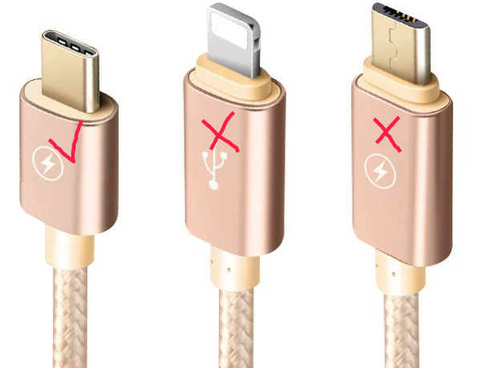

获得开发板
从Sipeed官方淘宝店获得心仪的硬件： 淘宝
1. 需要的硬件
1.1. 一款开发板
开发板详细资料请看 Wiki， 选择一款合适自己的开发板～
1.2. USB Type C 连接线

选用 Type-C 是因为它支持正反插，对开发十分友好
从淘宝官方购买可以询问是否附送， 目前大部分安卓机也在使用 Type C 连接线
1.3. 屏幕
默认使用 st7789驱动芯片的 LCD （24pin接口）， 分辨率为 320x240
从淘宝官方购买可以询问是否包含
1.4. 摄像头
默认使用 ov2640
从淘宝官方购买可以询问是否包含
1.5. Micro SD 卡 （TF 卡） （可选）
不适用 SD 卡也是可以操作文件的， 在内部 Flash 上已经保留一部分来作为文件系统了，只是 Flash 速度很慢！
为了方便图片文件快速操作，可以选择购买一张 Micro SD 卡， MaixPy 内置了 SPI SD卡协议驱动，
购买时尽量选择速度快协议新的 Micro SD 卡， 比如 SD 2代协议， Class10 的内存卡
因为 K210 没有 SDIO 硬件外设， 所以使用了 SPI 来与 SD 卡通信， 当然，市面上的 SD 卡品质参差不齐， SPI 模式不一定都能兼容， 尽量买正规的卡， 实在有需求请自行定制驱动～～
如下图， 左边两张卡 MaixPy 的驱动不支持， 中间和右边的都支持， 但是中间的 class10 卡速度最快

1.6. ST-Link （用来给开发板 Maix Go 上的 STM32 更新固件） （可选）
如果购买的是 Maix Go， 上面集成了一颗 STM32 芯片， 用来模拟 USB转串口 工具， 以及模拟 JTAG, 如果想后期自行更新其固件，建议购买一个 ST-Link 备用
1.7. JTAG 调试器 （可选）
K210 这款芯片支持 JTAG 调试， 如果需要调试功能， 需要使用 JTAG 调试器， 请在 Sipeed 官方淘宝店咨询购买。
如果是 Maix Go 开发板， 可以不用另外购买 JTAG 调试器， Maix Go 开发板上面集成了一个 STM32芯片， 可以模拟 JTAG（STM32 使用 CMSIS-DAP 或者 open-ec 固件）， open-ec 固件目前还不支持，后续会支持，请以 open-ec github 项目主页说明为准